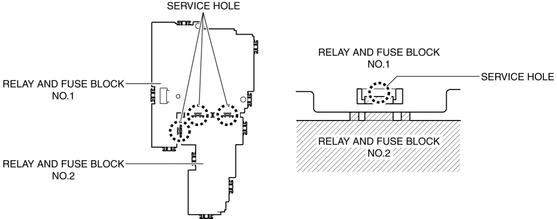
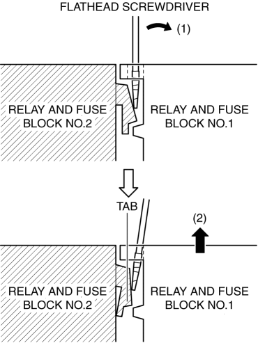

< Previous
Next >
2014 -
Mazda6 -
Body and Accessories
RELAY AND FUSE BLOCK DISASSEMBLY/ASSEMBLY
1. Insert a tape-wrapped flathead screwdriver into the service hole in the position shown in the figure.

2. Move the flathead screwdriver in the direction of the arrow (1) shown in the figure, and pull up the relay and fuse block No.1 in the direction of the arrow (2) shown in the figure to detach the relay and fuse block No.2 tab from relay and fuse block No.1.

3. Detach all the relay and fuse block No.2 tabs from relay and fuse block No.1, and remove relay and fuse block No.1 from relay and fuse block No.2.
4. Assemble in the reverse order of disassembly.
< Previous
Next >
© 2012 Mazda North American Operations, U.S.A.